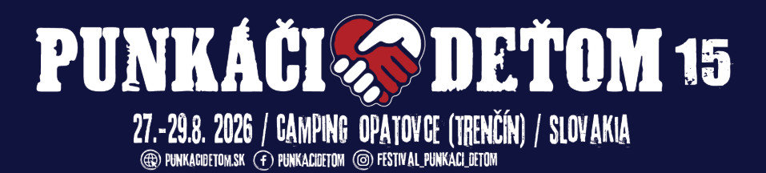

INFO
Rady
Doprava — Auto
Upozornenie pre návštevníkov, majiteľov jednodňových vstupeniek a celofestivalových permanentiek! Ak pôjdeš na festival autom, do navigácie si zadaj Dalitrans Veľké Bierovce. Asi 150 metrov pred Dalitrans odboč vľavo, následne prejdeš k areálu cez betónovú plochu výkup paliet (tu je zákaz parkovania), parkuje sa až ďalej priamo v areáli campingu.
Presné súradnice: 48.856780, 17.963672
Doprava — Taxi
Ak sa rozhodneš ísť taxíkom, povedz šoférovi, nech ťa vysadí zo strany Dalitrans. Dbaj na to, aby ťa nevysadil pred VIP bránou, pretože by si musel prejsť približne 1 km po cyklotrase.
Doprava — Kapely / VIP
Upozornenie pre kapely a VIP návštevníkov — do navigácie si zadajte Chata na rybníku Opatovce a prídete až pred VIP bránu festivalu. Ak by ste zadali Farma ryby Opatovce, zavedie vás to na druhú stranu kanála — síce vedie k areálu, ale cca hodinu po poľnej ceste.
Platba
Na Punkáči deťom platíme prostredníctvom NFCtron. Dobi si kredit online cez NFCtron Tickets a plať rýchlo, bezpečne a s prehľadom o svojich výdavkoch. Viac nižšie v sekcii Platba online.
Stanovanie
Stanovanie je v areáli festivalu a je bezplatné. Návštevníci musia dodržiavať VOP organizátora, ktoré budú zverejnené aj na vstupe areálu.
Deti
Deti do 15 rokov musia byť v sprievode rodiča. Každé dieťa od veku 2 rokov musí mať zakúpenú vstupenku, ktorá je v symbolickej cene. Na pásku dieťaťa bude napísaný telefónny kontakt na rodiča, pre prípad, ak by sa dieťa v areáli stratilo.
Taxi — zmluvné
Využite zmluvné TAXI označené PUNKÁČI DEŤOM:
- 📞 0910 277 300
- 📞 0910 288 300
Cenník (jednosmerná jazda):
- Žel. stanica / TN Sihoť – Kemping Opatovce — 12 €
- Tesco / Kaufland / Juh – Kemping Opatovce — 12 €
- Lidl Zlatovce – Kemping Opatovce — 8 €
- Žel. stanica Zlatovce – Kemping Opatovce — 8 €
Mapa areálu

Platba online — NFCtron
Hotovosť na Punkáči deťom nepotrebuješ. Dobi si kredit online cez NFCtron Tickets, plať priložením náramku s čipom k zariadeniu na mieste predaja a sleduj svoje výdavky jednoducho online. Platenie bude vďaka systému NFCtron rýchlejšie, prehľadnejšie a bezpečnejšie. Ak neutratíš všetko, o zvyšok kreditu neprídeš — zostatok si môžeš bezplatne vyžiadať späť až do 14 dní po skončení podujatia.
V areáli nebudú akceptované platby za služby v hotovosti ani kartou; dobiť kredit si ale vieš aj za hotovosť.
Mobilná aplikácia NFCtron
Pre lepší prehľad odporúčame stiahnuť si mobilnú aplikáciu NFCtron pre Android alebo iOS. Po načítaní čipu pomocou NFC uvidíš všetky výdavky a aktuálny zostatok, môžeš hodnotiť objednávky, dostávať upozornenia o platbách a po skončení akcie pohodlne vrátiť zostávajúce prostriedky na bankový účet.
Dobitie kreditu online (NFCtron Tickets)
- Nezaplatíš nič naviac a na akciu budeš ready.
- Nevytlačíme spoločne žiaden papier naviac, všetko nájdeš jednoducho online.
- Náramok s čipom dostaneš pri vstupe do areálu. Na dobíjacom mieste stačí ukázať QR kód z NFCtron Tickets.
Dobitie kreditu na mieste
- Dobiť kredit môžeš hotovosťou alebo kartou na označenom dobíjacom mieste NFCtron.
- Aktivačný poplatok za prvé dobitie je 1,5 €.
- Po dobití dostaneš papier s odkazom a QR kódom — odlož si ho pre kontrolu zostatku a vrátenie zvyšného kreditu.
FAQ — ako zistím zostatok?
Po každej objednávke ti predajca zobrazí zostatok. Zostatok vidíš aj v mobilnej aplikácii NFCtron — stačí načítať čip (nezabudni si zapnúť NFC).
FAQ — vrátenie zostatku
Vrátenie kreditného zostatku je bezplatné a neobmedzené pre účty v CZK a EUR. Stačí načítať čip do mobilnej aplikácie NFCtron a 3 kliknutiami požiadať o vrátenie na bankový účet. O vrátenie môžeš požiadať do 14 dní po skončení akcie. Hotovosť nevraciame.
Support NFCtron: info@nfctron.com
Zdroj: punkacidetom.sk